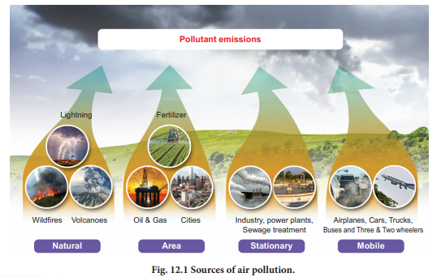
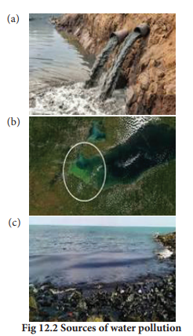
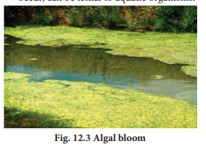
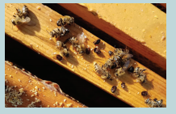
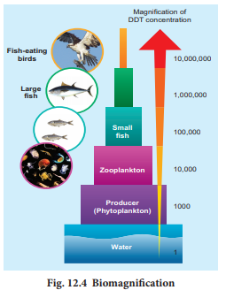
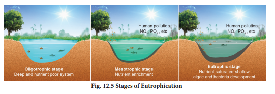
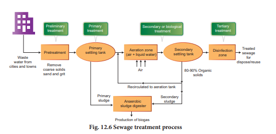
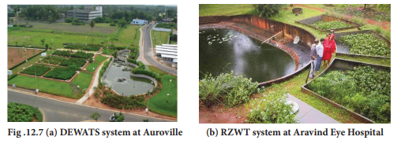
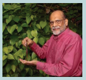
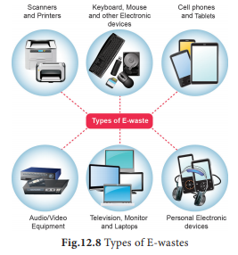

12 point 1 Pollution
12 point 2 Air Pollution
12 point 3 Water Pollution
12 point 4 Noise Pollution
12 point 5 Agrochemicals
12 point 6 Biomagnification
12 point 7 Eutrophication
12 point 8 Organic Farming and its Implementation
12 point 9 Solid Waste Management
12 point 10 Ecosan Toilets
Gain knowledge about our environment and its importance.
Get to know about the effects and after effects of human activities on climate and ecosystem.
Know about eco-friendly practices for pollution mitigation.
Acquire insights into solutions to environmental problems.
Understand the need for peoples’ participation in environmental protection.
Understand the importance of clean environment.
A clean environment is very necessary to live a peaceful and healthy life. But our environment is getting dirty day by day because of our negligence. Earth is currently facing a lot of environmental concerns like air pollution, water pollution, and noise pollution, global warming, acid rain, biomagnification, eutrophication, deforestation, waste disposal, ozone layer depletion and climate change. Over the last few decades, the exploitation of our planet and degradation of our environment have gone up at an alarming rate. As our actions have not been in favour of protecting this planet, we have seen natural disasters striking us more often in the form of flash floods, tsunami and cyclones.
“Every individual should be environmentally aware, regardless of whether they work with environmental issues or not.”
Pollution is any undesirable change in the physical, chemical and biological characteristics of the environment due to natural causes and human activities. The agents which cause pollution are called pollutants. Pollution is classified according to the types of environment that is affected. They are mainly air, water and soil pollution.
In terms of eco-system, pollutants can be classified into two basic groups – Nondegradable and degradable. Based on the time taken to breakdown into their ingredients, degradable pollutants are classified as rapidly degradable (non-persistent) and slowly degradable (persistent).
a. Rapidly degradable or non-persistent pollutants: These can be broken down by natural processes. Domestic sewage and vegetable waste are examples of such pollutants.
b. Slowly degradable or persistent pollutants: These are pollutants that remain in the environment for many years in an unchanged condition and take decades or longer to degrade, as in the case of DDT.
c. Non-degradable pollutants: These cannot be degraded by natural processes. Once they are released into the environment, they are difficult to be eliminated and continue to accumulate (biomagnification). Toxic elements like lead, mercury, cadmium, chromium and nickel are such common pollutants.
Pollution Earth is surrounded by a gaseous envelope which is called atmosphere. The gaseous blanket of the atmosphere acts as a thermal insulator and regulates the temperature of the earth by selectively absorbing The U V rays of solar radiation. The adverse effects of pollution include depletion of Ozone by Chlorofluorocarbons or C F C s, used as refrigerants and global warming by elevated C O 2 (industries, deforestation, and partial combustion).
The alterations or changes in the composition of the earth’s atmosphere by natural or human activities (anthropogenic factors) are referred as Air Pollution. Pollutants include the abundant presence of solid, liquid or gaseous substances produced by human or natural activity. The nature and concentration of a pollutant determines the severity of detrimental effects on organisms and human health. Along with atmospheric factors (humidity, precipitation, wind, air currents, altitude) prevailing at a place and time, its effects can be far reaching and catastrophic

.
Air pollutants can be
Carbon monoxide (C O) is produced mainly due to incomplete combustion of fossil fuels. Automobiles are major causes of C O pollution in large cities and towns Automobile exhausts, fumes from factories, emission from power plants, forest fires and burning of fire-wood contribute to C O pollution.
With rapid urbanization, major amount of carbon dioxide and sulphur dioxide (S O 2) is released in the atmosphere. From automobiles, aeroplanes, power plants and other human activities that involving the burning of fossil fuels (coal, oil etc.,) C O 2 is the main pollutant that is leading to global warming.
Nitrogen oxides are also major air pollutants. Fossil fuel combustion and automobiles exhausts are the source of nitrogen oxides. Sulphur dioxide and nitrogen oxides are the major causes of acid rain.
Particulate matters are tiny particles of solid matter suspended in a gas or liquid. Combustion of fossil fuels, fly ash produced in thermal power plants, forest fires, asbestos mining units, cement factories are the main sources of particulate matter pollution.
The main sources of air pollution (Figure 12.1) are:
Sameer, an App provides hourly updates on the National Air Quality Index (A Q I) published by C P C B.
Smog is a type of air pollution caused by tiny particles in the air. The word comes from a mixture of the words smoke and fog .
Today, smog generally refers to photochemical smog, which is created when sunlight reacts with nitrogen oxides and volatile organic compounds found in fossil fuel emissions from automobiles, factories, and power plants. These reactions create ground-level ozone and particulate matter, reducing visibility. Smog can make breathing more difficult, especially for people with asthma.
Smog also affects plants and animals. It damages crops as well as causes health problems in pets, farm animals and human beings. Smog has also been known to cause corrosive damage to buildings and vehicles.
Peroxyacetyl nitrate (PAN) is a secondary pollutant present in photochemical smog. It is thermally unstable and decomposes into peroxyethanol radicals and nitrogen dioxide gas causing eye irritation.
Global warming: Increase in the concentrations of greenhouse gases such as C O 2, methane, nitrous oxide, C F C s, and ozone causes greenhouse effect, warming of the earth, resulting in sea level rise, submerging of islands and sea shores of various parts of the world.
Ozone depletion: Thinning of the stratospheric ozone layer is known as ozone depletion. Such depletion causes the ‘ozone hole’, resulting in poor screening of the harmful UV rays and increase in incidences of skin cancer. Some of the common agents that deplete ozone are C F Cs.
Acid rain: Acid rain is a form of precipitation that contains acidic components, such as sulphuric acid or nitric acid. It damages trees, crops and harms marine animals (coral reefs) and induces corrosion.
Certain measures help to remove pollutants, reduce their presence or prevent their entry into the atmosphere.
Box item
The Taj Mahal, a UNESCO world heritage site, is facing deterioration and damage by industrial gases due to several industrial units around Agra. The white marble has decolorized to yellow.
Steps taken by the Central and the State governments in India:
Average human consumption of Oxygen per day equal to 550 L
Cost of 2.75 L Oxygen cylinder equal to ₹ 6500
Cost of 550 L of oxygen from tree equal to ₹ 1300000
Oxygen production by one healthy tree per year equal to 100375 L
Cost of 2.75 L oxygen cylinder equal to ₹ 6500
Cost of 1,00,375 L of oxygen from one tree per year equal to ₹ 237250000
Air Quality Index (A Q I) is a number used by government agencies to communicate to the public how polluted the air is at a given time
Air Quality Index |
|
|
AQI |
Air Pollution Level |
Colour |
0 to 50 |
Good |
Dark green |
51 to 100 |
Moderate |
Light green |
101 to 150 |
Unhealthy for Sensitive Groups |
Yellow |
151 to 200 |
Unhealthy |
Light red |
201 to 300 |
Very Unhealthy |
Moderate red |
301+ |
Hazardous |
Dark red |
Water is essential for life and for the health of the environment. As a valuable natural resource, it comprises marine, estuarine, freshwater (river and lakes) and groundwater environments that stretch across coastal and inland areas. Water has two dimensions that are closely linked: quantity and quality. Water quality is commonly defined by its physical, chemical, biological and aesthetic (appearance and smell) characteristics. A healthy environment is one in which the water quality supports a rich and varied community of organisms and protects public health.
Water pollution occurs when there is a change in the chemical, physical or biological quality of water that has harmful effects on living organisms that consume it or live in it. Water pollution adversely affects water bodies due to the large amounts of natural or man-made materials let into it. When it becomes unfit for its intended use, water is considered polluted.
Even though water bodies or sources can be polluted by natural causes, water pollution is usually caused by human activities. There are three main types of sources: point sources, non-point sources, leaks and spills.
Point sources: Discharge of pollutants at specific locations through pipelines or sewers into the water body. Factory effluents, sewage, underground mines, oil wells, oil tankers and agriculture are common point sources (Figure 12 point 2 a).
Non-point sources: Sources that cannot be traced to a single site of discharge like acid rain, dumping of the plastics in water bodies, agriculture chemical run off are common examples (Figure 12 point 2 b).

Leaks and Spills: This occurs mostly due to ship collision, off shore oil rigs, oil leakages and discharges into sea (Figure 12 point 2 c).
Sources of water pollution can also be classified in three ways. They are municipal wastes, industrial wastes, and agricultural wastes.
1. Municipal waste water is from homes and commercial establishments.
2. Industrial discharge (effluents) may contain varieties of compounds such as heavy metals (cadmium, chromium, lead), and organic or inorganic chemicals containing waste water, sometimes in toxic concentrations. These discharges can affect temperatures of the water bodies as well as dissolved oxygen level.
3. Agricultural wastes include fertiliser and pesticide runoff from agricultural fields, food processing waste, tree and saw dust from logging operations and bacteria from sewage or livestock operations.
Water pollutants reach water bodies like rivers, streams and the marine system by precipitation, run-off and the groundwater by seepage or percolation.
1. Destruction of ecosystems: Ecosystems, especially aquatic systems, can be severely affected or destroyed by water pollution. Water pollutants affect existing niches and habitats and the survival of organisms. Soil fertility is affected and the system becomes uninhabitable.
2. Disruption of food-chains: Water pollution disrupts the natural food chains as well as food webs. Pollutants such as lead and cadmium are taken up by primary consumers where they can be lethal or get stored. Later, when these animals are consumed by secondary consumers, the food chain can get disrupted at any trophic level or result in enhanced concentration of these pollutants (biomagnification). Hot water from industries when released into the water bodies affects aquatic density and diversity.
1. Water pollution can be lethal to aquatic organisms and others that depend on these water bodies.
Accidental oil spills from tanker ships can cause substantial environmental damage. Oil spreads on the water surface, prevents the entry of light and oxygen into the water. This increases B O D and C O D, resulting in mass death of organisms and degradation of water quality. It also clogs fish gills and the feathers of aquatic birds.
Box item
On January 28, 2017, two cargo ships collided off the Ennore coast in Chennai causing oil to spill into the sea. Due to wave action and the southern current, the spill spread over to 34 km down south affecting the coast. Beach sand also got spoiled by the oil sludge. It took more than a thousand volunteers to clean the oil sludge.
2. Humans and other organisms can get affected by diseases such as hepatitis and typhoid by consuming contaminated water and food. Excess of fluoride in drinking water causes fluorosis. In many poor nations, outbreak of water borne diseases and epidemics are a result of contaminated water and poor or absence of water treatment processes.
3. Water pollution can cause eutrophication due to nutrient enrichment. This causes algal blooms which affect the quality of water bodies (Figure. 12.3). Red tides, if occur, can be lethal to aquatic organisms.

1. Right to clean water is a fundamental right under the Indian Constitution (Article 21).
2. Water (Prevention and Control of Pollution) Act, 1974, sections 17 to 40 prohibit the pollution of a stream or well by disposal of polluting matter.
3. The Central or State Pollution Control Boards have the power to advise the central or state government on various matters concerned with the prevention and control of pollution of water.
4. The Ministry of Environment, Forest and Climate Change (MoEFCC) is the nodal agency of the Central Government for the planning, promotion, co-ordination and for overseeing the implementation of India’s environmental and forestry policies and programmes.
5. National river conservation plan (NRCP) was enacted in 1995 to improve the water quality of the rivers, which are the major fresh water resources in our country. This important assignment taken up under the NRCP includes,
To capture the raw sewage flowing into the river through open drains and divert them for treatment.
Setting up sewage treatment plants for treating the diverted sewage.
Construction of low cost sanitation toilets to prevent open defecation on river banks.
Regulate or control of pollutants discharge at the point of generation.
Wastewater can be pretreated by scientific methods before discharge to municipal treatment sources.
Setting up of Sewage Treatment Plants (STP) and Effluent Treatment Plants (ETP).
Regulate or restrict the use of synthetic fertilisers and pesticides.
Public awareness and peoples’ involvement is essential.
Box item
Assessment by C P C B
The number of polluted stretches in India’s rivers has increased to 351 from 302 (in 2006), and the number of critically polluted stretches – where water quality indicators are the poorest – has gone up to 45 from 35 (Source: The Hindu, 17 September, 2018).
Namami Gange (National Mission for Clean Ganga) Programme is an Integrated Conservation Mission approved as the ‘Flagship Programme’ of the Union Government in June 2014 with a budget outlay of 20,000 crores to accomplish the twin objectives of effective abatement of pollution, conservation and rejuvenation of River Ganga.
Sound that is unwanted and undesirable or can disrupts one’s quality of life is called as Noise. When there is lot of ‘noise’ in the environment, it is termed as Noise Pollution. The intensity of noise is meaured in decibels (dB).
Vehicle engines, air horns, audio video systems, trains, low flying aircrafts, factory machines, sirens, motors, drillers and crushers, compressor machines, crackers, explosives, modern supersonic transports are the common sources of noise pollution.
The threshold of pain is about 120 db. World Health Organization has proposed that noise must be recognized as a major threat to human well-being. This is applicable for all living organisms.
According to the U S E P A (United States Environmental Protection Agency) there are direct links between noise and health. Heart disease, high blood pressure, stress related illness, sleep disruption, hearing loss (deafness), and productivity loss are the problems related to noise pollution.
Increased stress and tension, nervousness, irritability, anxiety, depression and panic attacks.
Peptic ulcer, severe head ache, memory loss.
Marine animals are affected by noise pollution from offshore activities and port activities.
Fire crackers frighten animals. Birds are often affected by increased air traffic.
Planting trees in and around noise sources is an effective solution for noise pollution as plants are known to absorb noise and bring down sound levels.
Regular servicing and tuning of automobile engines can effectively reduce noise pollution by vehicles and machinery.
Workers should be provided with ear plugs and earmuffs at work sites that generate high noise levels.
Lubrication of machinery and regular servicing minimizes noise levels.
Regulations should be imposed to restrict the usage of loudspeakers in crowded areas and public places.
Article 48-A and Article 51-A of the Constitution of India, Noise Pollution (Regulation and Control) Rules 2000, and Tamil Nadu State Environment Policy 2017 are some of the legal relief from noise pollution.
According to Noise Pollution (Regulation and Control) Rules, 2000, the permissible limit of noise in areas categorized as commercial is 65 decibels (dB) during day and 55 dB during night.
Chemicals which are used in agriculture for growth of plants and pest control are called agrochemicals or agrichemicals.
Overuse of agrochemicals have been observed to generate residues that cause nutrient imbalance. In addition,
Box item
1. Mosquito Repellents D E E T (n n diethylnetatoluamide) and allethrin used in mosquito coils may cause itching, burning, tingling sensation or numbness.
2. Colony collapse syndrome in Honey bees due to pesticides or herbicides can lead to destruction of hives and lower agricultural productivity. Remember bees are Nature’s best pollinators!!

Food chains are components of all ecosystems. Producers and consumers form trophic levels in a chain through which energy flow is carried out by the process of eating and being eaten. Usage, storage and transformation of food and biomolecules by metabolism are a normal process. Degradation or breakdown is an essential part of any food chain and hence all naturally occurring substances are degradable.

When non-degradable substances enter the food chain, they do not get metabolized or broken down or expelled and instead get transferred up the tropic levels of the food chain. During this process, they show an increase in concentration which is referred to as biomagnification. This results in increased toxicity and may even be lethal. This phenomenon is well established for mercury and DDT. Figure 12.4 schematically shows biomagnification of DDT in an aquatic food chain where the concentration of DDT is enhanced at successive trophic levels.
When run-off from land containing nutrients reaches water bodies like lakes, it results in dense growth of plant life. This phenomenon is called Eutrophication. Natural aging of lakes also leads to nutrient enrichment of its water. In a lake, the water is cold and clear (oligotrophic stage), supporting little life. With time, streams draining into the lake introduce nutrients such as nitrates and phosphates, which encourage the growth of aquatic organisms. Aquatic plants and animal life grow rapidly, and organic remains begin to be deposited on the lake bottom (mesotrophic stage) (Figure. 12.5).
Pollutants from anthropogenic activities like effluents from the industries and homes can radically accelerate the aging process. This phenomenon is known as Cultural or Accelerated Eutrophication.
Nutrients stimulate the growth of algae, water hyacinth and can cause clogging of canals, rivers and lakes as well as, displacing native plants. It causes unsightly foam and unpleasant odours, and deprives the water of dissolved oxygen.
Wastewater or sewage originates from domestic waste waters, industrial wastes and animal wastes. Realizing the importance of clean potable water, the Government passed the Water (Prevention and Control of Pollution) Act in 1974, which made it mandatory to treat wastewater in treatment plants. The main objective of a wastewater treatment process is to reduce organic and inorganic components in wastewater to a level that it no longer supports microbial growth and to eliminate other potentially toxic materials. Microorganisms mainly bacteria and some protozoa play an essential part in the treatment of sewage to make it harmless. Sewage contains pathogenic bacteria. These bacteria must be destroyed in order to prevent the spread of diseases. Sewage treatment is usually performed in the following three stages (Figure 12 point 6).


Primary treatment involves the physical removal of solid and particulate organic and inorganic materials from the sewage through filtration and sedimentation. Floating debris is removed by sequential filtration. Then the grit (soil and small pebbles) are removed by sedimentation. All solids that settle form the primary sludge and the supernatant forms the effluent. The effluent from the primary settling tank is taken for secondary treatment.
The primary effluent is passed into large aeration tanks where it is constantly agitated mechanically and air is pumped into it. This allows vigorous growth of useful aerobic microbes into floc (masses of bacteria associated with fungal filaments to form mesh like structures). While growing, these microbes consume the major part of the organic matter in the effluent. This significantly reduces the B O D (Biochemical oxygen demand or Biological oxygen demand). B O D refers to the amount of the oxygen that would be consumed, if all the organic matter in one litre of water were oxidized by bacteria. The sewage water is treated till the B O D is reduced. The greater the BOD of the waste water more is its polluting potential.
Once the B O D of sewage water is reduced significantly, the effluent is then passed into a settling tank where the bacterial “flocs” are allowed to sediment. This sediment is called activated sludge. A small part of activated sludge is pumped back into the aeration tank to serve as the inoculum. The remaining major part of the sludge is pumped into large tanks called anaerobic sludge digesters. Here, the bacteria which grow anaerobically, digest the bacteria and the fungi in the sludge. During this digestion, bacteria produce a mixture of gases such as methane, hydrogen sulphide and C O 2. These gases form biogas and can be used as a source of energy.

Tertiary treatment is the final process that improves the quality of the waste water before it is reused, recycled or released into natural water bodies. This treatment removes the remaining inorganic compounds and substances, such as nitrogen and phosphorus. UV is an ideal disinfectant for wastewater since it does not alter the water quality – except for inactivating microorganisms. UV is a chemical free process that can completely replace the existing chlorination system and also inactivates chlorine-resistant microorganisms like Cryptosporidium and Giardia.
Case Study: Auroville, located in South India near Puducherry has been experimenting with natural wastewater recycling systems (Decentralized Waste Water Treatment System (DEWATS)) (Figure 12.7 a). Such treatment plants have now also been implemented in Aravind Eye Hospital, Puducherry (Root Zone Wastewater Treatment (RZWT)) (Figure 12.7 b) and the Chennai Mathematical Institute, Siruseri IT Park, Chennai.
It is a method of farming system which primarily aims at cultivating the land and raising crops in such a way, so as to keep the soil alive and in good health by use of organic wastes (crop, animal and farm wastes, aquatic wastes) and other biological materials along with beneficial microbes (biofertilizers) to release nutrients to crops for increased sustainable production in an eco-friendly pollution free environment.
Every day, tonnes of solid wastes are disposed off at landfill sites. This waste comes from homes, offices, industries and various other agricultural related activities. These landfill sites produce foul smell if waste is not stored and treated properly. When hazardous wastes like pesticides, batteries containing lead, cadmium, mercury or zinc, cleaning solvents, radioactive materials, e-waste and plastics are mixed up with paper and other scraps and burnt, they produce gases such as dioxins. These gases are toxic and carcinogenic. These pollute the surrounding air, ground water and can seriously affect the health of humans, wildlife and our environment (Table 12 point 1).
Box item
G Nammalvar was a supporter and expert of organic farming. He was an agricultural scientist, environmental activist celebrated for his work on spreading Ecological farming & Organic farming. He was against the use of chemical fertilisers and pesticides. He trained hundreds of farmers in natural farming. Nammalvar was the author of several Tamil and English books on natural farming, pesticides & fertilisers and was featured in magazines & television programs. He founded the Nammalvar Ecological Foundation for Farm Research and Global Food Security Trust or simply Vaanagam at Karur, Tamilnadu. He developed social forest at Ammankurai and the Kolunji Ecological Farm in Pudukottai. He and his friends made a 10-acre barren land into fertile cultivable land in the dry Pudukottai district. He planted 52 varieties of trees in the same waste land extending in 20 acres. His organization ‘Kudumbam’ preserves and regenerates hundreds of native flora and fauna, in order to ensure a sustainable livelihood.
Table 12 point 1 Major sources of solid waste
Waste category |
Source |
Residential |
Food wastes, plastics, paper, glass, leather, cardboard, metals, yard wastes, ashes, tires, batteries, old mattresses |
Industrial |
Packaging wastes, ashes, chemicals, cans, plastics, metal parts |
Commercial |
Thin and thick plastics, food wastes, metals, paper, glass, wood, cardboard materials |
Institutional |
Wood, paper, metals, cardboard materials, electronics |
Construction and Demolition |
Steel materials, concrete, wood, plastics, rubber, copper wires, dirt and glass |
Agriculture |
Agricultural wastes, spoiled food, pesticide containers |
Biomedical |
Syringes, bandages, used gloves, catheter, urine bags, drugs, paper, plastics, food wastes, sanitary napkins and diapers, chemicals |
E-Waste |
Electronic items like used TVs, transistors, tape recorders, computer cabinets, mother boards, CDs, cassettes, mouse, wires, cords, switches., chargers |
Box item

Dr. Sultan Ahmed Ismail is an Indian soil biologist and ecologist from Tamil Nadu. His work has centered on techniques for recycling biodegradable waste into fertiliser using varieties of earthworms, and on soil bioremediation. Dr. Ismail received a Doctor of Science. in Zoology from the University of Madras for his research on the role of earthworms in soil ecology and waste management. He works on vermicomposting as a sustainable ecological practice. He has been instrumental in introducing as well as spreading awareness on environmental issues, solid waste management, vermicomposting, organic farming, vermitech and waste management to several educational institutions, industries and organic farmers in India and abroad.
Solid Waste management includes the activities and actions required to manage waste from its inception to its final disposal. This includes the collection, transport, treatment and disposal of waste, together with monitoring and regulation of the waste management process. It is all about how solid waste can be changed and used as a valuable resource.
Case Study: The Corporation of Chennai looks after clearance and management of solid waste in Chennai. Every day around 5400 Metric Tonnes (MT) of garbage is collected from the city. Door to door collection of garbage is done in most zones apart from sweeping, collecting, and storing the waste in the specified bins. At present garbage generated in Chennai is dumped at two sites. Proposals are there for remediation of the existing landfill or scientific closure and to have integrated waste processing facilities with waste to energy plants as one of the components at the existing Kodungaiyur and Perungudi sites.
a) Source segregation
b) Composting
1. Aerobic
2. Anaerobic
c) Vermicomposting
d) Biogas generation
e) Incineration
Radioactive wastes are generated during various operations of the nuclear power plant. Radioactive waste can be in gas, liquid or solid form, and its level of radioactivity can vary. The waste can remain radioactive for a few hours or several months or even hundreds of thousands of years. Depending on the level and nature of radioactivity, radioactive wastes can be classified as exempt waste, Low and Intermediate level waste and High Level Waste.
Radioactive waste management involves the treatment, storage, and disposal of liquid, airborne, and solid effluents from the nuclear industry.
The Three Mile Island (Pennsylvania, United States), Chernobyl (Pripyat, Ukraine) and Fukushima Daiichi (Ōkuma, Japan) are nuclear disasters the world has seen in the recent period.
Methods of disposal of radioactive wastes are
1. Limit generation - Limiting the generation of waste is the first and most important consideration in managing radioactive wastes.
2. Dilute and disperse - For wastes having low radioactivity, dilution and dispersion are adopted.
3. Delay and decay - Delay and decay is frequently an important strategy because much of the radioactivity in nuclear reactors and accelerators is very short lived.
4. Concentrate and confine process - Concentrating and containing is the objective of treatment activities for longerlived radioactivity. The waste is contained in corrosion resistant containers and transported to disposal sites. Leaching of heavy metals and radionuclides from these sites is a problem of growing concern.
Three ways are employed to manage nuclear wastes
Spent Fuel Pools - The spent fuel discharged from the reactors is temporarily stored in the reactor pool. The Spent fuel rods are used in stored cooling ponds. They protect the surroundings from radiation and absorb the heat generated during radioactive decay.
Vitrification method – This prevents reaction or degradation of nuclear waste for extended periods of time and encased in dry cement caskets.
Geological Repositories - A deep geological repository is a nuclear waste repository excavated deep within a stable geologic environment. It is suited to provide a high level of long-term isolation and containment without future maintenance. In India at Tarapur and Kalpakkam, a wet storage facility of Spent Fuel is the main mode of storage.
Any kind of waste that contains infectious material generated by hospitals, laboratories, medical research centers, Pharmaceutical companies and Veterinary clinics are called medical wastes.
Medical wastes contain body fluids like blood, urine, body parts and other contaminants, culture dishes, glasswares, bandages, gloves, discarded needles, scalpels, swabs and tissues.
Management: The safe and sustainable management of biomedical waste is the social and legal responsibilities of people working in healthcare centers.
Waste disposal: Involved by incineration, chemical disinfection, autoclaving, encapsulation, microwave irradiation are methods of waste disposals. Final disposal includes landfill and burying as per norms inside premises.
Electronic waste or e-waste describes discarded electrical electronic devices as well as any refuse created by discarded electronic devices and components and substances involved in their manufacture or use. Their disposal is a growing problem because electronic equipment frequently contains hazardous substances. In a personal computer, for example, there may be lead (P b) in the cathode ray tube (C R T) and soldering compound, mercury (H g) in switches and housing, and cobalt (C o) in steel components, among other equally toxic substances. E-wastes are basically P C B (Polychlorinated biphenyl) based, which are non-degradable (Figure 12 point 8).

Used electronics which are destined for reuse, resale, salvage, recycling, or disposal are also considered e-waste. Unauthorised processing of e-waste in developing countries can lead to adverse human health effects and environmental pollution.
Recycling and disposal of e-waste may involve significant risk to the health of workers and communities in developed countries and great care must be taken to avoid unsafe exposure in recycling operations and leaking of materials such as heavy metals from landfills and incinerator ashes.
Plastics are low molecular weight organic polymers that are non-degradable in the natural environment. They are used in several items, including cars, bulletproof vests, toys, hospital equipment, carry bags and food containers. Packaging materials used in supermarkets, retail outlets, manufacturing industries, households, hotels, hospitals, restaurants and transport companies are major contributors to plastic waste generation. Plastic waste constitutes a major part of municipal solid waste.
Box item
Remedies: ‘4R’- Refuse, Reduce, Reuse and Recycle mantra is the best available remedy for plastic waste pollution.
Tamil Nadu State government successfully implemented the ban on single use plastics from 1st January 2019.
About 150 liters of wastewater at an average is generated by an Indian individual daily, and a large amount of it is generated from toilets. Ecological sanitation (EcoSan) is a sustainable system for handling human excreta by using dry composting toilets. EcoSan toilets not only reduce wastewater generation but also generate the natural fertilizer from recycled human excreta, which forms an excellent substitute for chemical fertilizers. This method is based on the principle of recoveryand recycling of nutrients from excreta to create a valuable supply for agriculture. ‘EcoSan’ toilets are being used in several parts of India and Sri Lanka.
Degrading natural environments, depleting natural resources, pollution, vulnerability to large scale environmental changes and hazards are the core Environmental issues of today.
Air pollution by fossil fuel burning and other anthropological activities like industrialization is reaching alarming levels and affecting human health and testing the survival of sensitive species.
Domestic and industrial sewage, and agricultural run-off are the most common reasons for pollution of water bodies, resulting in reduced dissolved oxygen and increased Biochemical Oxygen demand of water bodies. Eutrophication and algal blooms are regular occurrences today. Industrial wastewaters are often rich in toxic chemicals, heavy metals and organic compounds which harm living organisms and may even result in death of aquatic life.
Noise pollution is a threat to human and other animals. It can affect health and disturb peaceful habitats. Agrochemicals and its usages cause many ill effects in human beings, other organisms and soil. Agrochemicals can also cause biomagnification. The solution is to revert to non-chemical farming (use of biofertilisers, biopesticides, protect pollinators) practices.
1. Right to Clean Water is a fundamental right, under the Indian Constitution
a) Article 12
b) Article 21
c) Article 31
d) Article 41
Answer: b) Article 21
2. The ‘thickness’ of Stratospheric Ozone layer is measured in or on:
a) Sieverts units
b) Dobson units
c) Melson units
d) Beaufort Scale
Answer: b) Dobson units
3. As per 2017 statistics, the highest per capita emitter of Carbon dioxide in the world is
a) USA
b) China
c) Qatar
d) Saudi Arabia
Answer: b) China
4. The use of microorganism metabolism to remove pollutants such as oil spills in the water bodies is known as
a) Biomagnification
b) Bioremediation
c) Biomethanation
d) Bioreduction
Answer: b) Bioremediation
5. Which among the following always decreases in a Food chain across tropic levels?
a) Number
b) Accumulated chemicals
c) Energy
d) Force
Answer: c) Energy
6. In the E-waste generated by the Mobile Phones, which among the following metal is most abundant?
a) Copper
b) Silver
c) Palladium
d) Gold
Answer: a) Copper
7. Dash is or are an ideal disinfectant for waste water.
a) U V Rays
b) Chlorination
c) Boiling
d) Ozonisation
Answer: a) U V Rays
8. SMOG is derived from :
a) Smoke
b) Fog
c) Both A and B
d) Only A
Answer: c) Both A and B
9. Excess of fluoride in drinking water causes:
a) Lung disease
b) Intestinal infection
c) Fluorosis
d) None of the above
Answer: c) Fluorosis
10. Expand (1) C F C (2) A Q I (3) P A N
11. What is SMOG and how it is harmful for us?
12. List all the wastes that you generate, at home, school or during your trips to other places. Could you very easily reduce the generation of these wastes? Which would be difficult or rather impossible to reduce?
13 Write notes on the following: a. Eutrophication b. Algal Bloom
14. What effect can fertilizer runoff have on an aquatic ecosystem?
15. How can we control eutrophication?
16. Discuss the role of an individual to reduce environmental pollution.
17. How does recycling help reduce pollution?
18. Discuss briefly the following :
a. Catalytic converter
b. Ecosan toilets
19. What are some solutions to toxic dumping in our oceans?
20. Define B O D.
21. What is referred to as biomagnification?
22. What are the effects of noise pollution?